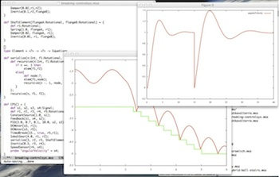

Modelyze - Modeling and Analysis
 Modelyze (MODEl and anaLYZE) is a host language designed for modeling and analysis of cyber-physical systems (CPS). Modelyze is not a modeling language itself, but a host language where domain-specific languages (DSLs) can be embedded. It has been tested and evaluated on equation-based object-oriented DSLs, used for modeling of physical systems.The language and its reference implementation are developed and maintained at KTH Royal Institute of Technology, Stockholm, Sweden.